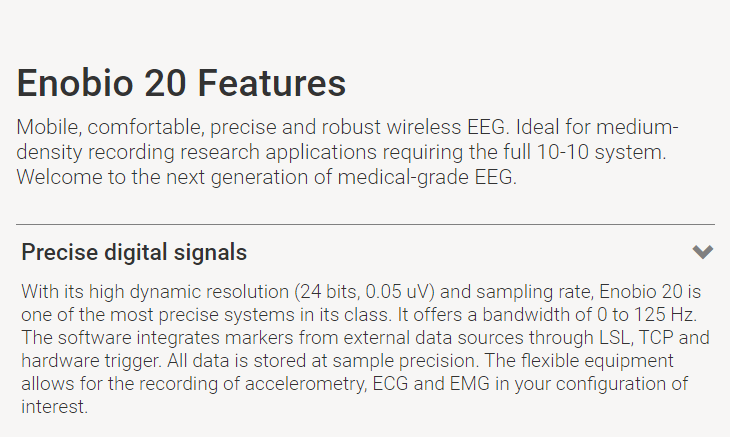

EEG Setup
EEG Setup
Setting up the workstation for the EEG is more involved than the eyetracker. Because of this, participants must be scheduled with enough time apart to allow for setup and maintenance. This guide will go over setup and procedure for using EEG in research.

- Setting up the Cap
- Attaching Electrodes
- Filling Electrodes
- Validating Connection
- Participant Interaction
- Data Collection
- Maintenance and End of Day Procedures
Setting up the Cap
The neoprene cap should always be clear of any debris from past participants. The cap should also be stationed on the Styrofoam head while not in use.
The cap is made of a flexible material and it should fit most heads.
Step 1: Prepare the headcap and electrodes
- Insert the bottom parts of the electrodes in the headcap holes.
- [Take Picture]!
- Take note of the placements on the NIC2 screen.

Step 2: Put on the headcap
- Place the headcap on he participants head
- Fasten the headcap comfortably.
- Make sure Cz is the midpoint from ear to ear.
- Make sure the headcap is properly aligned.
- Make sure Cz is the midpoint from ear to ear.
[Take Picture]!
Filling electrodes
- For each electrode, use the syringe to move hair away and expose the scalp.
- Fill the syringe with gel and put enough gel in the electrode.
- When you think you have put enough, put more!
- Fill the syringe with gel and put enough gel in the electrode.
- Make sure to screw together top and bottom parts of the electrode.
[Take Picture/Video]
Validating Connection
- Clip the cables onto the electrodes
- Make sure to match the electrode label with the right head cap position.
- NIC2 will give you an indication of good connectivity and poor connectivity
Code
placement <- read_excel("electrode placement.xlsx")
placement |>
hux() |>
theme_article()| Electrode Placement | Channel |
|---|---|
| OZ (P7) | 1 |
| P4 | 2 |
| Cz | 3 |
| Pz | 4 |
| P3 | 5 |
| O1 | 7 |
| O2 | 8 |
| T8 | 9 |
| F8 | 10 |
| C4 | 11 |
| F4 | 12 |
| Fp2 | 13 |
| Fz | 14 |
| C3 | 15 |
| F3 | 16 |
| Fp1 | 17 |
| T7 | 18 |
| F7 | 19 |
| Fpz (EXT) | 20 |
Step 5: Connect the ear clip
- Open the ear clip by pressing the ends together
- Place a drop of gel between the connector pads.
- Connect the reference cables to the ear clip.
- Secure the ear clip onto the participants right earlobe.
[Take Picture]
Step 6: Connect the device
- Attach the device to the large Velcro patch on the back of the head cap.
- Connect the electrode cables to the device.
[Take Picture]
Maintenance:
Storage: The electrodes are supposed to be kept in the dark. When the actual electrode is exposed to light, it is damaged. The electrodes should be kept in an opaque box that will protect them from light and allow them to dry off when you’ve washed them after use.
[Picture]
Cleaning: After you’ve finished with the experiment for the day, you must immediately clean the gel from the electrodes. Rise electrode with warm water, and gently remove the gel from the electrode entirely. This is harder than it looks - the gel has a tendency to dry up quickly in the tiny crevasses of the electrode. It may be beneficial to use a toothpick or a cotton swab to adequately remove all of the gel.
[Picture] Consider getting waterflosser
Afterwards, the electrodes should be placed in a dark box where they will allowed to dry.
Documentation: Every time you use the electrode, you must document the amount of time the electrode was used for. This keeps your electrodes on a replacement schedule. According to the manufacturer, Neuroelectrics, the electrodes only last for approximately 100 hours per electrode. If your experiment lasts 1 hour, you can think of this as if the electrode will be good for approximately 100 participants. Thus, in your lab notebook, document every use of the electrodes to be sure they are functioning properly during extended use.
Code
data.frame(
Electrodes = placement$`Electrode Placement`,
Hours_Used = 80
) |>
rename(`Hours Used` = Hours_Used) |>
hux() |>
theme_article()| Electrodes | Hours Used |
|---|---|
| OZ (P7) | 80 |
| P4 | 80 |
| Cz | 80 |
| Pz | 80 |
| P3 | 80 |
| O1 | 80 |
| O2 | 80 |
| T8 | 80 |
| F8 | 80 |
| C4 | 80 |
| F4 | 80 |
| Fp2 | 80 |
| Fz | 80 |
| C3 | 80 |
| F3 | 80 |
| Fp1 | 80 |
| T7 | 80 |
| F7 | 80 |
| Fpz (EXT) | 80 |
Ordering Supplies: When you need to replace the electrodes or order more gel, you will need to complete work order requests and submit to Barbara. Use the below information in order to fast-track the process and give less work to Barbara!
Details for ordering Gel – include links, codes, and prices